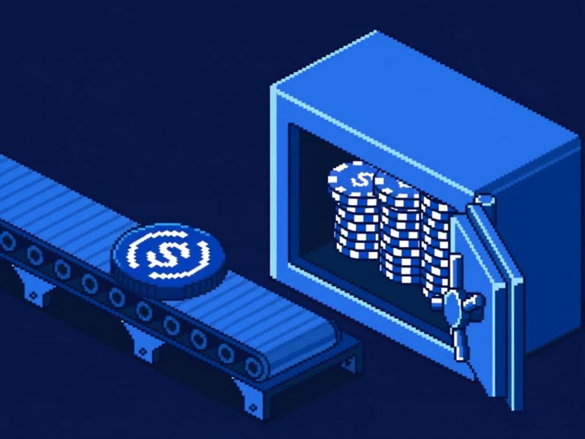

$ USDC IN. POSSIBILITIES OUT.
A new wave
of launches.
Launch in dollars. Trade in dollars.
Built for communities. Designed to deepen liquidity.
INSIDE THE MINT18 SECOND LOOP

THE JOURNEY, IN PIXELS · ILLUSTRATIVE ANIMATION
POWERED BY Raydium CPMMEvery market, paired with USDC
24h volume— USDC
Liquidity added— USDC
Launch profiles— TOKENS
THE NEXT WAVE
Discover tokens8
$ All values in USDC
Mainnet launch registryEndless possibilities. One stable quote.